Human-Art is a versatile human-centric dataset to bridge the gap
between natural and artificial scenes. It includes twenty high-quality human scenes,
including natural and artificial humans in both 2D representation (yellow dashed boxes)
and 3D representation (blue solid boxes).
Abstract
Humans have long been recorded in a variety of forms
since antiquity. For example, sculptures and paintings were
the primary media for depicting human beings before the
invention of cameras. However, most current human-centric
computer vision tasks like human pose estimation and human
image generation focus exclusively on natural images
in the real world. Artificial humans, such as those in sculptures,
paintings, and cartoons, are commonly neglected,
making existing models fail in these scenarios.
As an abstraction of life, art incorporates humans in both
natural and artificial scenes. We take advantage of it and
introduce the Human-Art dataset to bridge related tasks in
natural and artificial scenarios. Specifically, Human-Art
contains 50k high-quality images with over 123k person
instances from 5 natural and 15 artificial scenarios, which
are annotated with bounding boxes, keypoints, self-contact
points, and text information for humans represented in both
2D and 3D. It is, therefore, comprehensive and versatile
for various downstream tasks. We also provide a rich set
of baseline results and detailed analyses for related tasks,
including human detection, 2D and 3D human pose estimation,
image generation, and motion transfer. As a challenging
dataset, we hope Human-Art can provide insights for
relevant research and open up new research questions.
Video
Contents of Human-Art
50,000 images including more than 123,000 human figures in 20 scenarios
[5 natural scenarios]
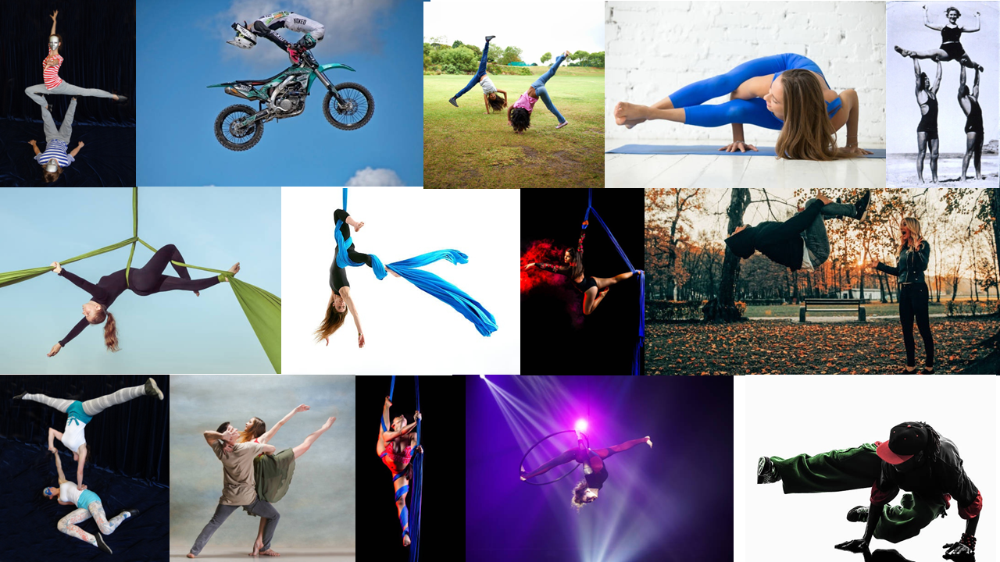
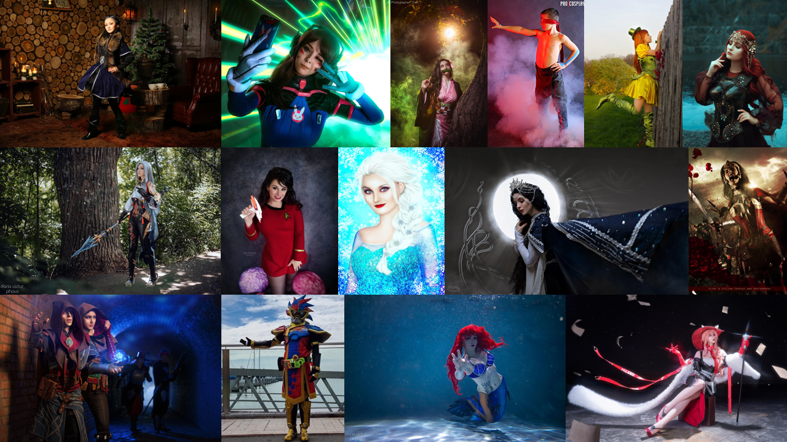
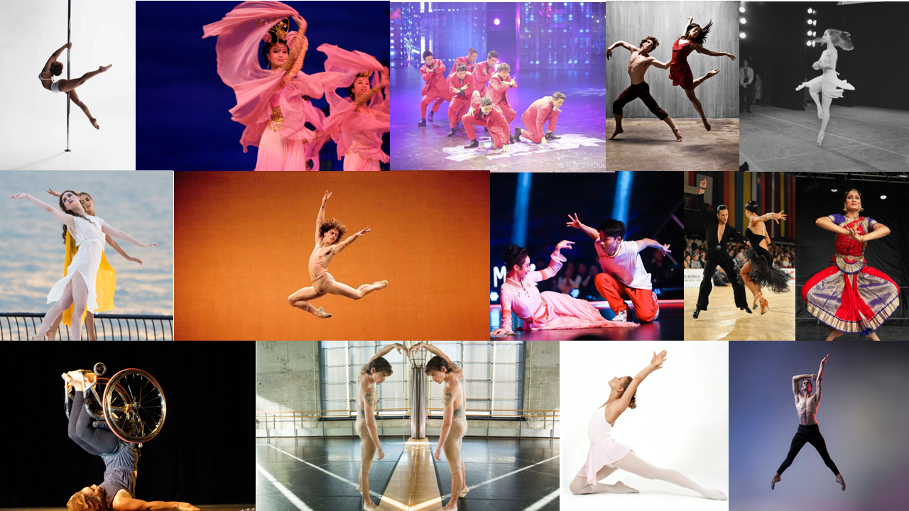
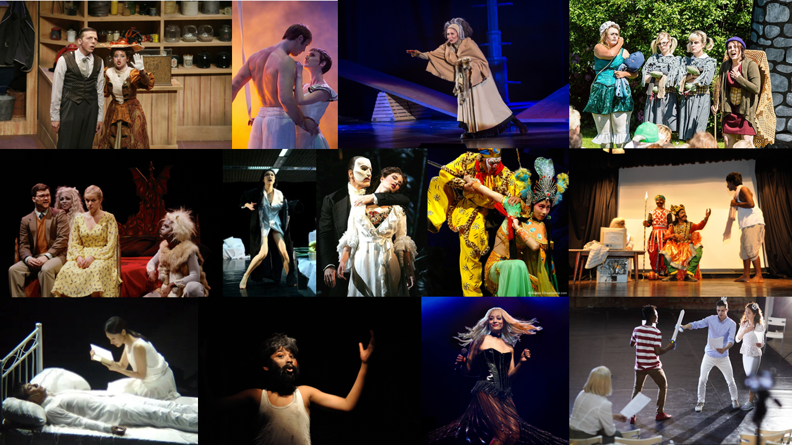
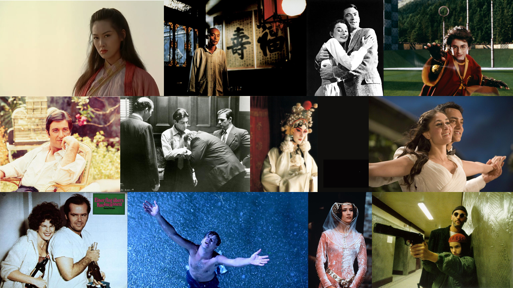
[3 2D artificial scenarios]
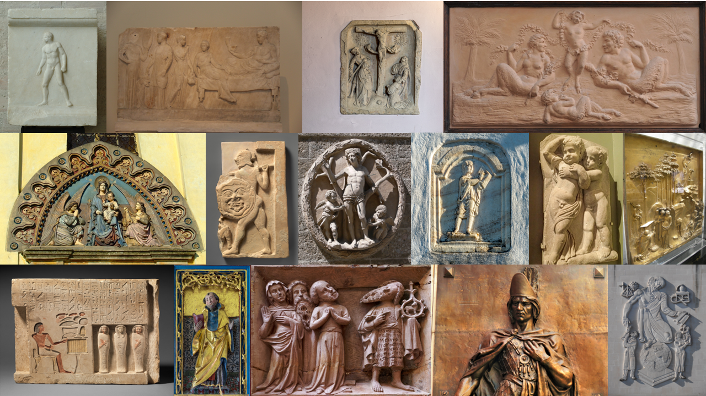
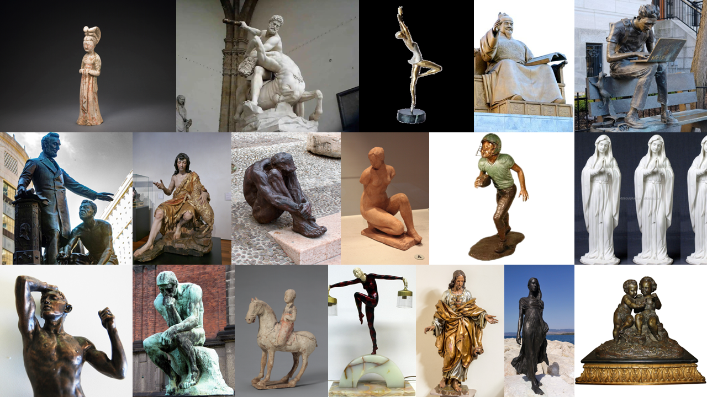
[12 2D artificial scenarios]
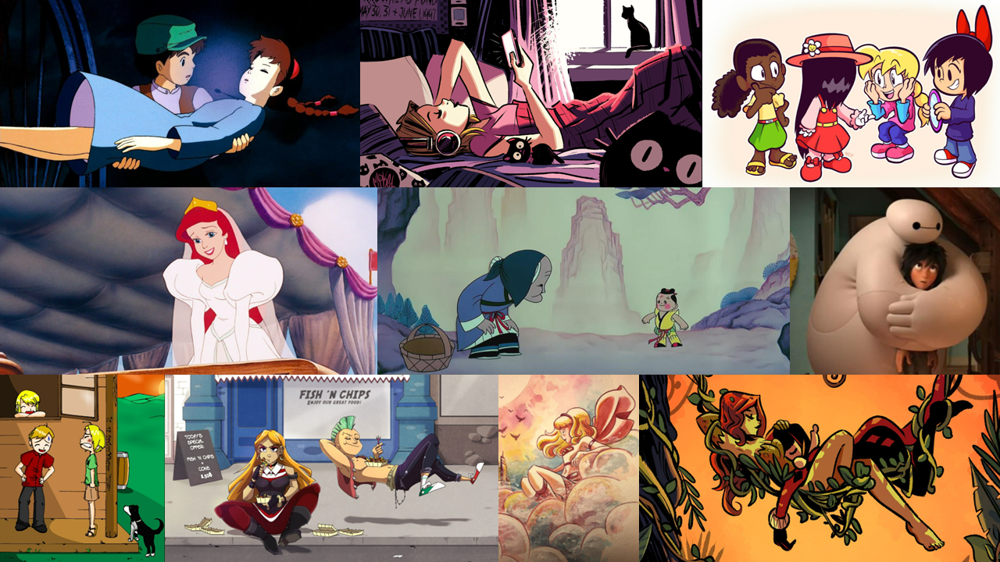
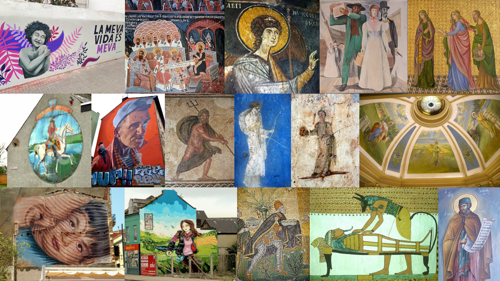
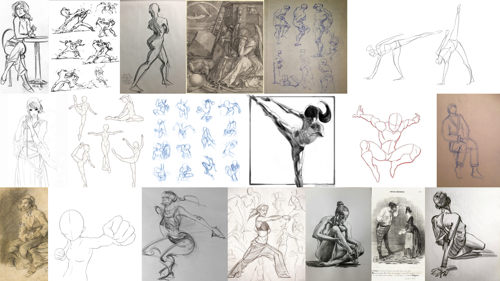
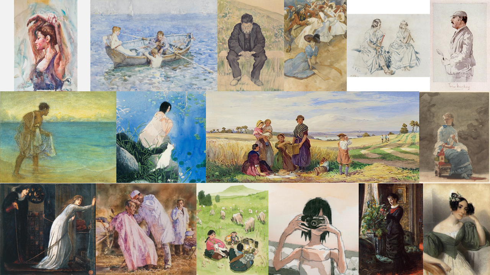
Human-centric annotations include human bounding box, 21 2D human keypoints, human self-contact keypoints, and description text
Contrast with Previous Datasets
Comparison of human-centric recognition datasets, including human detection and pose estimation tasks.
Data Collection & Annotation Process
Data collection and annotation processes. The entire labeling process ensures an accuracy of at least 98%.
Target Tasks
multi-scenario human detection, 2D human pose estimation, and 3D human mesh recovery
multi-scenario human image generation (especially controllable human image generation, e.g. with conditions such as pose and text)
out-of-domain human detection and human pose estimation
Downstream Tasks - 1 Human Detection
Human detection task identifies the bounding box
of each person in a given image, which is fundamental for
further human scene understanding.
Performance of widely-used detectors on the validation and test sets of Human-Art. All the pre-trained models have
poor performance on artificial scenes, with average precision
(AP) ranging from 11.7% to 14.7%, confirming the
impact of the domain gap on the models' generalization
ability. The joint training procedure leads to about a
56% performance boost in Shadow Play and a 31% average
improvement in all categories.
Downstream Tasks - 2 Human Pose Estimation
Human Pose Estimation (HPE) is another basic task for human
motion analysis, which can be divided into 2D HPE
and 3D HPE, outputting 2D keypoints and 3D keypoints
respectively.
2D Human Pose Estimation
Performance of widely used as well as the SOTA 2D human pose estimation methods on the
validation and testing sets of Human-Art. We provide results of top-down pose estimator (HRNet[2], ViTPose[3]),
bottom-up pose estimator (HigherHRNet[4]), one-stage pose estimator (ED-Pose[5]). Moreover, we provide a baseline model by training HRNet[2]
on the assembly of MSCOCO[1] and Human-Art, resulting in an overall 21% boost in accuracy.
Human Mesh Recovery
Depth ambiguities hinder the fidelity of 3D human mesh estimation from a monocular camera. The self-contact annotations we provide can facilitate
reasonable depth optimization via the interpenetration penalty, thus benefit 3D mesh recovery.
Illustration of how the annotated self-contact points can benefit 3D human mesh recovery. (a), (c), and (e) show the human mesh
outputs from three scenes without self-contact optimization. (b), (d), and (f) are optimized mesh results with self-contact points.
By mapping the contact region onto the vertices of
a rough SMPL[6] model generated by Exemplar Fine-Tuning
(EFT)[7] and then minimizing the distance among the
contact vertices,
annotating self-contact keypoints can largely benefit 3D mesh recovery.
Downstream Tasks - 3 Image Generation
Text2Image Generation
Text2Image takes text as conditional information and generate human images based on text description.
Example generations with five scenes from a diffusion
generative model trained on Human-Art. Notably, Shadow Play is
a novel scene for existing generative models.
Pose&Text2Image Generation
Moreover, Human-Art can be helpful in pose & text conditional image generation (Pose&Text2Image).
Multi-scenario human-centric image generation with precise pose control. Each group of
displayed images includes: (a) a generation by the pre-trained pose-less text-guided stable diffusion (SD)[8], (b) pose
skeleton images as the condition, (c) a generation by ControlNet[9], and (d)
a generation by model trained on assembly of Human-Art and other datasets (this work is not ready for demonstration, we will make it public as soon as possible). (d) shows its
superiorities in terms of (I) challenging poses, (II) accurate painting styles, (III) pose control capability, (IV) multi-person
scenarios, and (V) delicate details
BibTeX
@inproceedings{ju2023humanart,
title={Human-Art: A Versatile Human-Centric Dataset Bridging Natural and Artificial Scenes},
author={Ju, Xuan and Zeng, Ailing and Jianan, Wang and Qiang, Xu and Lei, Zhang},
booktitle={Proceedings of the IEEE/CVF Conference on Computer Vision and Pattern Recognition (CVPR),
year={2023}}
Contact Us
For detailed questions about this work, please contact juxuan.27@gmail.com
We are looking for talented, motivated, and creative research and engineering interns working on human-centric visual understanding and generation topics. If you are interested, please send your CV to Ailing Zeng (zengailing@idea.edu.cn).
Reference
[1] Tsung-Yi Lin, Michael Maire, Serge Belongie, James Hays,
Pietro Perona, Deva Ramanan, Piotr Dollár, and C Lawrence
Zitnick. Microsoft COCO: Common objects in context. In
European Conference on Computer Vision (ECCV), pages
740–755. Springer, 2014.
[2] Ke Sun, Bin Xiao, Dong Liu, and Jingdong Wang. Deep
high-resolution representation learning for human pose estimation.
In Proceedings of the IEEE/CVF Conference on
Computer Vision and Pattern Recognition (CVPR), pages
5693–5703, 2019.
[3] Yufei Xu, Jing Zhang, Qiming Zhang, and Dacheng Tao.
ViTPose: Simple vision transformer baselines for human
pose estimation. In Alice H. Oh, Alekh Agarwal, Danielle
Belgrave, and Kyunghyun Cho, editors, Advances in Neural
Information Processing Systems (NIPS), 2022.
[4] Bowen Cheng, Bin Xiao, Jingdong Wang, Honghui Shi,
Thomas S Huang, and Lei Zhang. HigherHRNet: Scaleaware
representation learning for bottom-up human pose estimation.
In Proceedings of the IEEE/CVF Conference on
Computer Vision and Pattern Recognition (CVPR), pages
5386–5395, 2020.
[5] Jie Yang, Ailing Zeng, Shilong Liu, Feng Li, Ruimao Zhang,
and Lei Zhang. Explicit box detection unifies end-to-end
multi-person pose estimation. In International Conference
on Learning Representations, 2023.
[6] Matthew Loper, Naureen Mahmood, Javier Romero, Gerard
Pons-Moll, and Michael J. Black. SMPL: A skinned multiperson
linear model. ACM transactions on graphics (TOG),
34(6):248:1–248:16, Oct. 2015.
[7] Hanbyul Joo, Natalia Neverova, and Andrea Vedaldi. Exemplar
fine-tuning for 3d human model fitting towards in-thewild
3d human pose estimation. In International Conference
on 3D Vision (3DV), pages 42–52. IEEE, 2021.
[8] Robin Rombach, Andreas Blattmann, Dominik Lorenz,
Patrick Esser, and Björn Ommer. High-resolution image
synthesis with latent diffusion models. In Proceedings of
the IEEE/CVF Conference on Computer Vision and Pattern
Recognition (CVPR), pages 10684–10695, 2022.
[9] Lvmin Zhang and Maneesh Agrawala. Adding conditional
control to text-to-image diffusion models. arXiv preprint
arXiv:2302.05543, 2023.